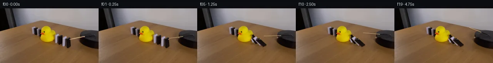

![首帧]()

Round 00
2026-11-05T01:56:35.844776+00:00像素候选变化代码 +398/−0inspection 更新
pixels eea03319543461d1 · code 6f6a91c4df2e0a1d
查看本轮 generate.py 真实 diff
--- previous/generate.py
+++ current/generate.py
@@ -0,0 +1,398 @@
+"""Pixel-only, source-textured tabletop dynamics. No external assets or engines."""
+from pathlib import Path
+import json
+import math
+import numpy as np
+import cv2
+from scipy.ndimage import binary_fill_holes, gaussian_filter
+from PIL import Image, ImageDraw
+from artifact_io import save
+
+ROOT = Path(__file__).resolve().parent
+SRC = np.array(Image.open(ROOT / 'first_frame.png').convert('RGB'))
+H, W = SRC.shape[:2]
+S = 4
+Y, X = np.mgrid[:H, :W]
+
+
+def polygon_mask(points, scale=1):
+ m = np.zeros((H * scale, W * scale), np.uint8)
+ cv2.fillPoly(m, [np.round(np.asarray(points) * scale).astype(np.int32)], 255)
+ if scale != 1:
+ m = cv2.resize(m, (W, H), interpolation=cv2.INTER_AREA)
+ return m.astype(np.float32) / 255
+
+
+def soften(mask, sigma=.42):
+ return gaussian_filter(mask.astype(np.float32), sigma)
+
+
+# Ordered from the duck outward; measured source face coordinates.
+BLOCKS = [
+ dict(name='pale beside duck', b=[143.7, 90.0], w=[5.2, -2.7], d=[3.2, 1.2], z=[-.7, -19.9], u=0.0,
+ outline=[[142.6,70.3],[148.8,66.6],[152.7,67.8],[152.2,88.8],[146.2,92.0],[142.8,89.7]], pale=True),
+ dict(name='inner dark', b=[151.6, 93.7], w=[6.8, -3.3], d=[3., 1.2], z=[-1., -20.0], u=9.2,
+ outline=[[149.8,74.2],[157.9,70.0],[161.4,71.3],[161.8,92.7],[154.,96.1],[150.2,93.4]], pale=False),
+ dict(name='outer pale', b=[163., 98.0], w=[6.8, -3.3], d=[2.8, 1.], z=[-.7, -20.8], u=19.8,
+ outline=[[161.9,77.1],[168.8,73.5],[172.8,74.0],[173.2,97.0],[166.0,100.2],[162.4,98.0]], pale=True),
+ dict(name='struck dark', b=[171.8,103.], w=[8.2,-3.4], d=[3.8,1.5], z=[-1.2,-22.6], u=30.0,
+ outline=[[169.1,81.2],[178.6,76.7],[182.9,77.4],[184.4,99.9],[178.,105.],[173.3,102.5]], pale=False),
+]
+FACES = [(0,3,7,4), (3,2,6,7), (4,7,6,5)]
+
+
+def cube_vertices(block, angle):
+ b=np.array(block['b'],float)
+ w=np.array(block['w'],float)
+ d=np.array(block['d'],float)
+ z=np.array(block['z'],float)
+ ratio=np.linalg.norm(d)/24.0
+ # Rotation about the bottom edge, toward the duck, in the tabletop plane.
+ dd=d*np.cos(angle)+z*ratio*np.sin(angle)
+ zz=z*np.cos(angle)-d/ratio*np.sin(angle)
+ return np.array([b,b+w,b+w+dd,b+dd,b+zz,b+w+zz,b+w+dd+zz,b+dd+zz])
+
+
+for b in BLOCKS:
+ b['mask']=soften(polygon_mask(b['outline'],S),.28)
+ b['erase']=cv2.dilate((b['mask']>.035).astype(np.uint8),np.ones((3,3),np.uint8)).astype(float)
+ b['v0']=cube_vertices(b,0)
+
+# The duck mask preserves its actual photographic detail, including eye and bill.
+a=SRC.astype(float)
+duck_seed=(a[:,:,0]>120)&(a[:,:,1]>105)&(a[:,:,1]>1.65*a[:,:,2])&(X>=103)&(X<153)&(Y>=44)&(Y<93)
+n,lab,stats,_=cv2.connectedComponentsWithStats(duck_seed.astype(np.uint8),8)
+duck_mask=binary_fill_holes(lab==(1+np.argmax(stats[1:,cv2.CC_STAT_AREA]))).astype(float)
+duck_mask=np.maximum(duck_mask,polygon_mask([[104.1,65.2],[109.,63.2],[115.,66.],[112.,70.],[105.,68.8]],S))
+duck_alpha=soften(duck_mask,.40)
+
+# Precisely remove the old thin arm. The hub and surrounding disk stay photographed.
+PIVOT=np.array([245.5,70.7])
+TIP0=np.array([178.5,81.8])
+ANCHOR0=np.array([219.8,74.1])
+arm_erase=np.zeros((H,W),np.uint8)
+cv2.line(arm_erase,(178,82),(221,74),255,4,cv2.LINE_AA)
+cv2.line(arm_erase,(221,74),(249,70),255,3,cv2.LINE_AA)
+arm_erase=arm_erase.astype(float)/255
+
+# Local reconstruction. Fit slow illumination from clean wood pixels; borrow only
+# high-frequency wood grain from an unoccupied patch of the same source table.
+all_obj=np.maximum.reduce([b['erase'] for b in BLOCKS])
+shadow_erase=np.zeros((H,W),float)
+for b in BLOCKS:
+ bv=b['v0'][:4]
+ pts=np.vstack([bv+[-3,-2],bv+[9,7]])
+ hull=cv2.convexHull(pts.astype(np.float32)).reshape(-1,2)
+ sh=soften(polygon_mask(hull,S),1.2)
+ b['shadow_erase']=sh
… diff truncated; 311 more lines …